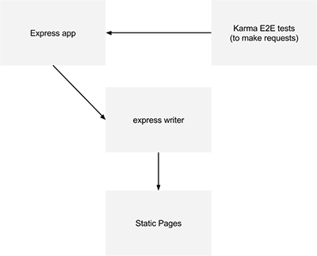

Write an express app, output static files.
If you want an existing implementation, we conviently made a Yeoman generator for you.
$ npm install -g generator-express-static
express-static is bascially an implementation of a few components that allow us to generate a static website while having the feeling of "just writing an expressjs application. If you are asking yourself "This doesn't really do much", then you are right on point with the goals of this project.
We want you to have the feeling of freedom of just writing a dynamic web application, while still being able to pump a static site.
At meltmedia, we write a lot of gigantic static websites. These projects quickly become too large for most static site generators. We do not need most of the features of the current availble options, and we wanted to make something we could mold to every project that may come up. Why write plugins when you can just use the thousands of node modules?
If it works with express, it will have a really good chance of working with this project.

A web application framework for node
javascript test runner that we use to make requests to our express app.
A small piece of code that sits inside express's res.send function. It captures the route that was called, the body that would be sent to the browser, and writes that result to an html file.
The more the better.
Keep as close to a basic Express application as possible. For example, we do not want to add every templating engine to our Yeoman project, because adding template support to express is pretty trivial. We want you to add what you need. In this sense, code examples and documentation are more important than features.
Parts of this project